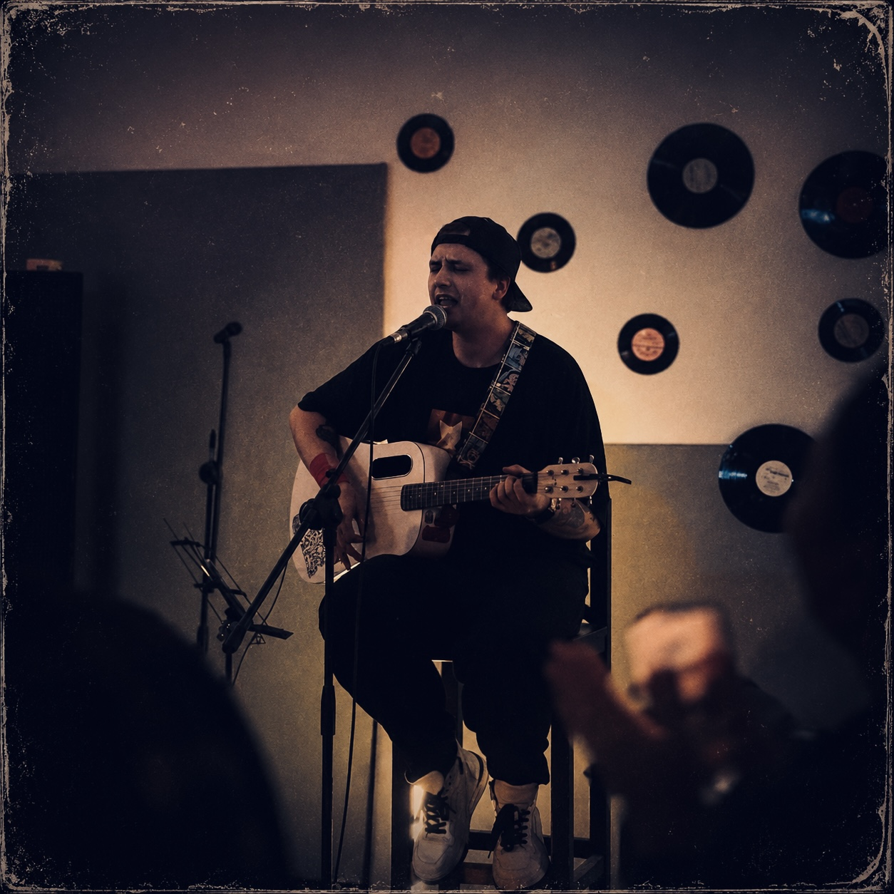
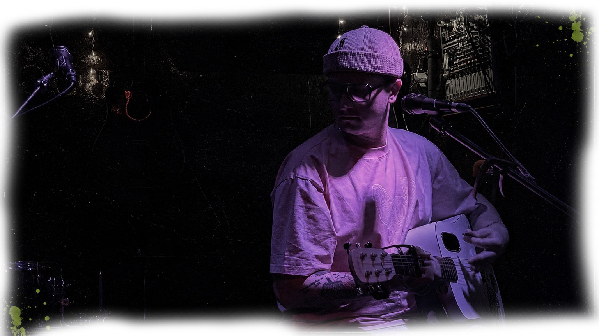
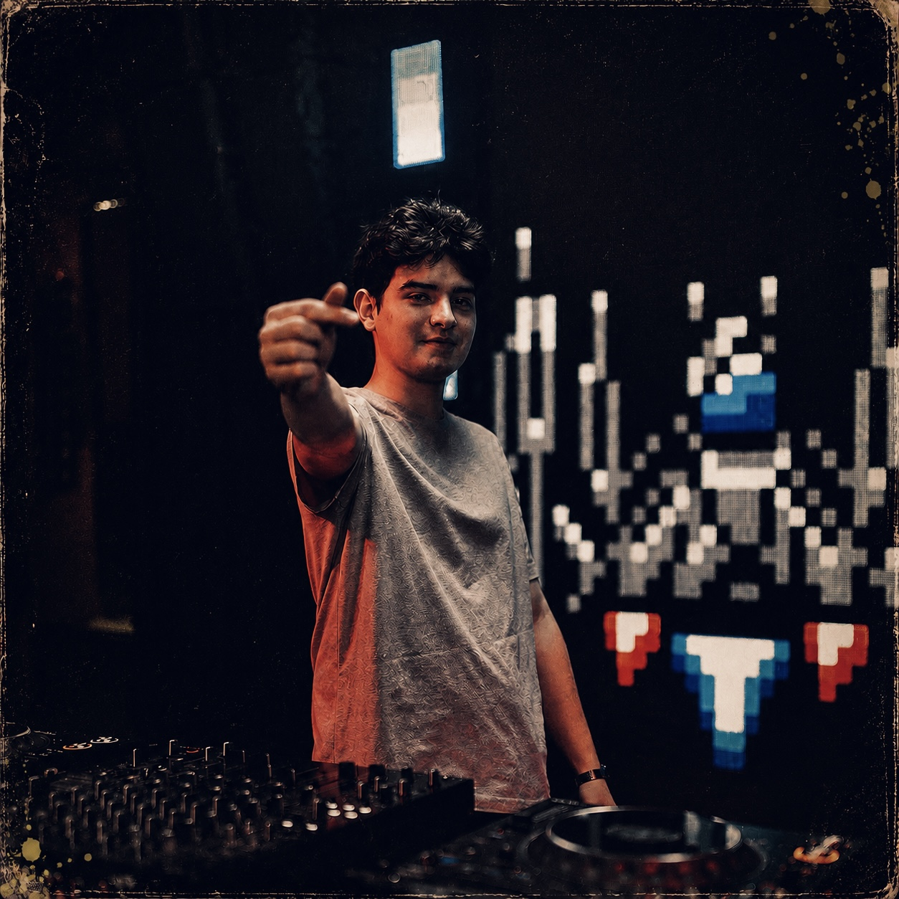
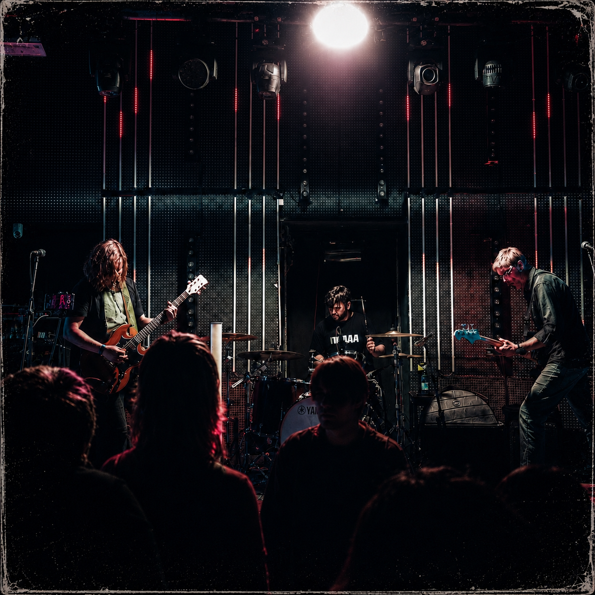
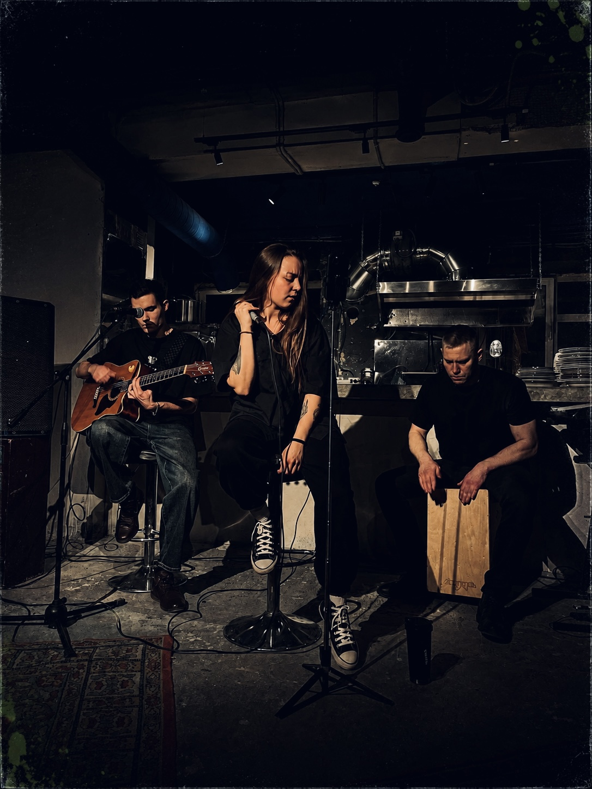
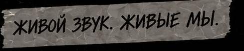

SOBIVAN
презентация EP-альбома, старые хиты и новый материал — всё в одном сете.
день рождения. концерт. хаос.
живые инструменты, презентация EP-альбома Subovhan, старые и новые песни, друзья, шум и люди, которые понимают этот рэп.

что будет
суть простая: музыка, люди, лайв и ощущение, что всё это не собрано по шаблону.
кто выступает
два сильных верхних слота и ещё три артиста, которые собирают вечер в один лайнап.

презентация EP-альбома, старые хиты и новый материал — всё в одном сете.

саунд-продюсер с электронной музыкой, которая будет держать атмосферу весь вечер.
душевная акустика и свои песни — более тихая, но нужная интонация в лайнапе.

казанское эмо с гаражным пост-хардкором: крик, стонер, рокешник и живой напор.

песни о важном и простом — про путь, жизнь и то, что откликается в людях.
вписаться
заполни форму — мы с тобой свяжемся.
заявка улетает в список гостей, тебе приходит уведомление, а после отправки человек может подтвердить участие через telegram-бота.

место